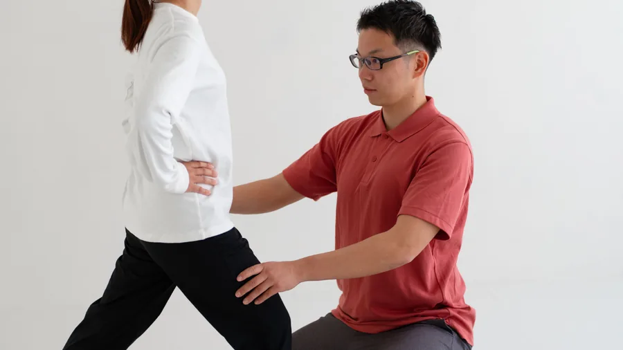
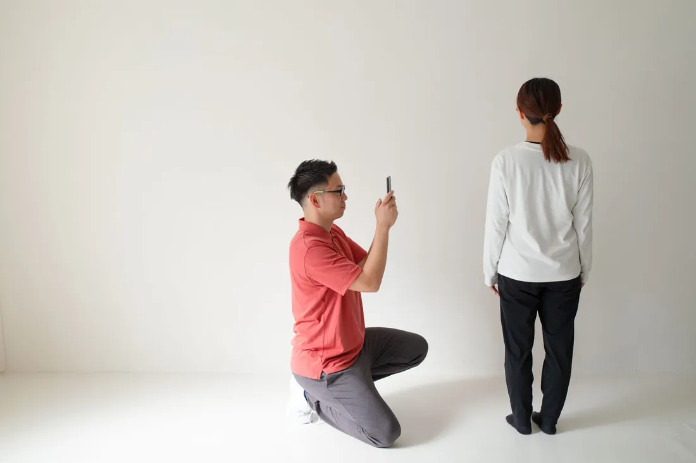
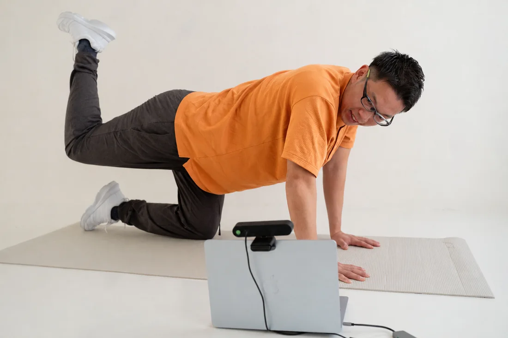
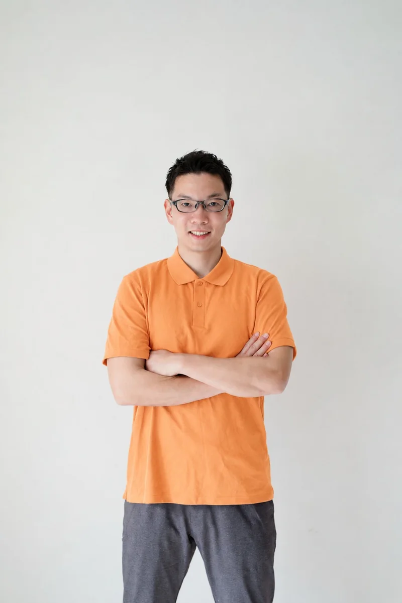

鹿児島初｜パーキンソン病専門 トレーニングスタジオ
あなたが自分らしく動けるように、アスパスが伴走します
パーキンソン病や脳卒中（脳梗塞・脳出血）後遺症のある方へ
こんなお悩みはありませんか？
- パーキンソン病は運動が大事といわれたけど、何をしたらいいかわからない
- このまま症状が進行してしまうのではと不安
- 脳卒中後遺症でうまく歩けず、転ぶのが心配
- 着替えなどの生活での動きに支障がある
- 仕事への復帰や、旅行・習い事などの趣味を再開したい
アスパスのトレーニングでこれらのお悩みを解消し、
自分らしく過ごせるようにしましょう。
あなたとともに歩む、ASPATH
ASPATHは不安を「希望」に変える、
パーキンソン病・脳卒中専門のトレーニングスタジオです。
ASPATHの名前は、関わった皆様が「アス＝明日へ、パス＝つなげる道」へ
伴走できるように、といった意味が込められています。
ASPATHが適切な時期に適した運動を届けることが希望となり、
より良い未来を共に歩みます。
パーキンソン病の症状を緩和し、進行を予防していく——
脳卒中発症後に時間が経過しても自分らしい生活を諦めない——
それらをかなえるべく、国家資格である理学療法士と豊富な経験を保有する
専門トレーナーがサポートします。
一人ひとりが自分自身の心身の可能性を信じ、前を向いて歩んでいける
温かい社会を、この鹿児島の地から広げることが使命です。
ASPATHが選ばれる3つの理由
確かな専門性で、早期からの「その人らしい歩み」に伴走します。

症状に特化した専門トレーニング
パーキンソン病と脳卒中についての知識と経験が豊富なトレーナーがトレーニングを提供します。症状の特徴を踏まえながら、安全で効果的なプログラムを実施します。

あなた専用のトレーニングプラン
お体の状態を客観的にチェックし、今後の見通しを含めて最適なトレーニングをご提案。分析ツールも活用して、現状についてわかりやすくお伝えします。状態によっては『ゆるめる』といった、運動のための下準備もおこないます。

オンライントレーニングも可能
アスパスはスタジオでの対面だけでなく、テレビ通話を使ったオンライントレーニングも得意としています。ご自宅にいながら有効なトレーニングができ、対面との併用もできます。
NEWS
お知らせ
スタッフ紹介
代表挨拶
ASPATH代表の山口祐弥です。効果的な運動をするだけでなく、人生の伴走者でありたいと考えています。

代表写真📷 差し替え山口 祐弥
やまぐち ゆうや｜ASPATH代表
1992年生まれ、鹿児島生まれ鹿児島育ち。鹿児島の総合病院で8年間、神経疾患を中心とした理学療法に携わったのち、東京のパーキンソン病専門運動施設で4年間勤務。これまでに、多くのパーキンソン病・脳卒中の方のリハビリ・トレーニングを担当。2026年始めに、地元の鹿児島へUターンし、ASPATHを開業。
| 資格 | 理学療法士／保健学修士／LSVT-BIG®認定療法士（パーキンソン病特化）／脳卒中療養指導士 |
|---|
適切な時期に、必要なサポートができないことに課題を感じていました。ASPATHを通じて、必要とする方に効果的な運動を届け、人生の伴走をしていくことが私の使命です。
実績・受賞歴
- 論文執筆：Effectiveness of Video-Based Intensive Core Training in Parkinson’s Disease（パーキンソン病における動画を用いた集中体幹トレーニングの有効性）, Converging Clinical and Engineering Research on Neurorehabilitation V, 2024.
- 国際学会発表：Experiences and future perspectives with two patterns of intensive online exercise training in early-stage Parkinson’s disease（初期パーキンソン病患者における2種類の集中的オンライン運動トレーニングの経験と将来展望）, The 6th World Parkinson Congress（世界パーキンソン病学会、スペイン・バルセロナ）, 2023.
- 国際学会発表：Effectiveness of Video-based Intensive Core Training in Parkinson’s Disease（パーキンソン病における動画を用いた集中体幹トレーニングの有効性）, 6th International Conference on NeuroRehabilitation（世界ニューロリハビリテーション学会、スペイン・マドリード）, 2024.
- コンテスト出場：日本最大級のウェルネスピッチコンテスト『Wellness Leaders Award 2026』準決勝出場, 発表タイトル「日本のパーキンソン病の方を元気にさせたい！地方・鹿児島から届ける運動と希望」（東京）, 2026.
- 国内学会発表：長下肢装具による装具療法と大殿筋への機能的電気刺激療法を併用した事で歩行能力が向上した回復期脳卒中右片麻痺患者1例（学会奨励賞受賞）, 第32回鹿児島県理学療法士学会学術集会（鹿児島）, 2019.
- 論文執筆：脳卒中片麻痺患者の起き上がり動作時の下肢・体幹運動の分析-自立群，非自立群，健常高齢者での検討-, 鹿児島大学大学院保健学研究科紀要, 2021.
- 医療講演：パーキンソン病の方とそのご家族に知ってもらいたい「運動」の話, 全国パーキンソン病友の会鹿児島県支部設立35周年記念事業 Web医療講演会（鹿児島）, 2021.
- 医療講演：パーキンソン病の方が行う運動の効果と明日からできる一工夫, 全国パーキンソン病友の会鹿児島県支部医療講演会（鹿児島）, 2023.
- 論文共著：Toward a Novel Phenotypic Classification of Parkinson's Disease for Rehabilitation: A Case Series（リハビリテーションのためのパーキンソン病の新たなサブタイプ分類に向けて：ケースシリーズ）, Cureus Journal of Medical Science, 2026.
- ほか多数
FOLLOW US
SNSでも情報発信中
日々のトレーニングの様子やお知らせを発信しています。ぜひフォローしてください。
よくある質問
ご不明な点があれば、お気軽にお問い合わせください。
病院のリハビリが終了してしまいましたが、利用できますか？
はい、大丈夫です。ASPATHは医療保険・介護保険の枠外の自費サービスのため、リハビリ期限に関係なくご利用いただけます。行き場を失って不安な方のための場所です。
パーキンソン病と診断されたばかりでも通えますか？
むしろ早期・軽度の段階からのトレーニングを最もおすすめしています。適切な運動で進行を抑制できることが研究で示されており、ASPATHは早期からの予防トレーニングに特化しています。
遠方に住んでいますが、オンラインでも受けられますか？
はい。パーソナルトレーニングはオンラインでも実施可能です。ご自宅からビデオ通話で、来店時と同じ担当者が指導します。
料金はいくらですか？保険は使えますか？
初回トレーニング体験（90分）は8,800円ですが、営業開始キャンペーンにより2026年9月30日まで半額の4,400円です。継続プランは1回60分で、月8回79,600円・月4回39,800円・月2回22,000円（税込）、単発は60分13,200円。保険外（自費）のため保険は適用されませんが、期限や回数の制限なく専門的なトレーニングを継続できます。
スタジオはどこにありますか？
鹿児島市内の3カ所（天文館・鹿児島中央町・城西）のレンタルスタジオで実施しています。天文館は市電「天文館通」駅、鹿児島中央町はJR「鹿児島中央」駅よりいずれも徒歩5分、城西は鹿児島中央駅よりお車で約5分。ご利用者のニーズに応じて実施スタジオを調整できます。ご予約確定後に場所の詳細をご案内します。ご自宅への訪問トレーニングやオンラインも可能です。
申し込みはどうすればいいですか？
お申し込みフォームからどうぞ。迷っている段階なら、公式LINEにスタンプ一つ送っていただくだけでも構いません。
お気軽にお問い合わせできます。
お役立ち情報も定期配信中！